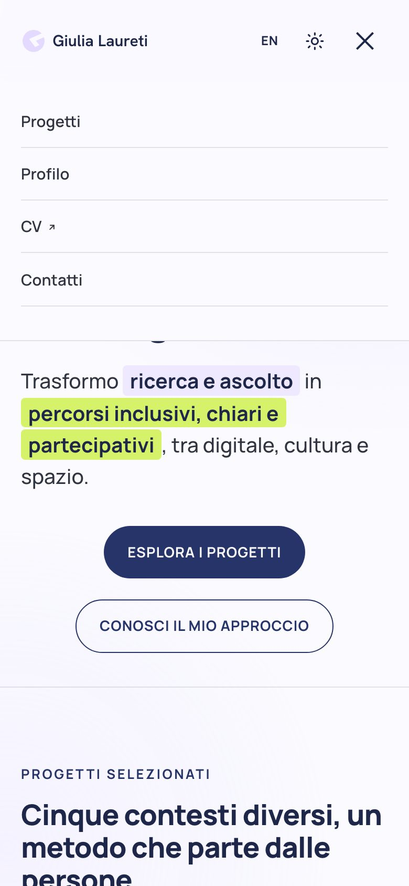
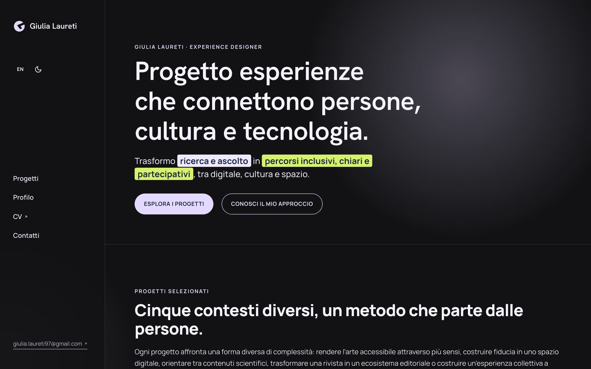

My Personal Website
Designing and building, on my own, the portfolio that tells the story of my work.

In short
The site you're reading right now is, in turn, a project. I wanted it to communicate the same method it describes in the case studies — start from people, give structure to complexity, verify instead of assuming — applying it to myself: from information architecture to publishing, by way of performance, accessibility and privacy.
The challenge
A portfolio has to hold up under two different readings: that of someone evaluating the design thinking behind each choice, and that of someone who wants to quickly grasp concrete skills and technical reliability. It also needed to be a system capable of growing — new projects, content in other languages — without a rebuild every time.
On top of that came very practical constraints: working well on every device, being findable, respecting the privacy of the people visiting it, and staying sustainable to maintain over time, on my own.
My contribution
I defined the information architecture, tone of voice, design system and every single page and case study. I built the site through vibecoding, directing an AI assistant line by line on development, publishing, the domain, SEO and performance optimization, the privacy notice and cookie consent: every design, content and structural decision remains mine.
Key decisions
A fixed sidebar in place of a header
The name and navigation stay visible at all times in a fixed column on the left instead of a header that scrolls away. It gives the site a more personal identity and frees the space above the content from having to be repeated in every section.


A design system with few elements, consistent everywhere
Colors, spacing and typography (Hanken Grotesk for the more personal voice, Manrope for everything else) are defined once and applied identically on every page, card and button. A small but disciplined system, easier to maintain than a series of page-by-page choices.
Stated transparency about the limits of the data
Some case studies are anonymized to protect the privacy of clients and former colleagues, with reconstructed visuals rather than real screenshots. I chose to state this explicitly in the text: a reader's trust matters more than a more polished image.
Mobile on equal footing with desktop
Most people who visit a portfolio do so from a phone. Menus, cards and diagrams were checked and fixed across several real widths until no detail — a clipped border, a stray arrow, compressed text — was left unresolved.
Publishing built to last
A dedicated domain, hosting with automatic publishing on every change, structured data and a sitemap for search-engine visibility, a clear privacy notice and genuine cookie consent before any traffic analytics activate.
Result and reflection
The site is live on my own domain, fast, accessible and built to grow — new projects, content in more languages — without having to start from scratch each time.
This project also led me to reflect on how working methods are changing. The real challenge wasn't using AI, but bringing a critical eye and a design technique it couldn't have applied on its own: collaborating with AI works when you don't delegate the whole project to it, but work in harmony with the tool, handing it the purely mechanical parts so you can focus your energy and attention on a people-centred design strategy guided by accessibility, clarity and transparency — without losing sight of a personal, distinctive aesthetic.
Being my own client was the most honest test of my method: no brief to interpret, just my own decisions to defend, one by one.